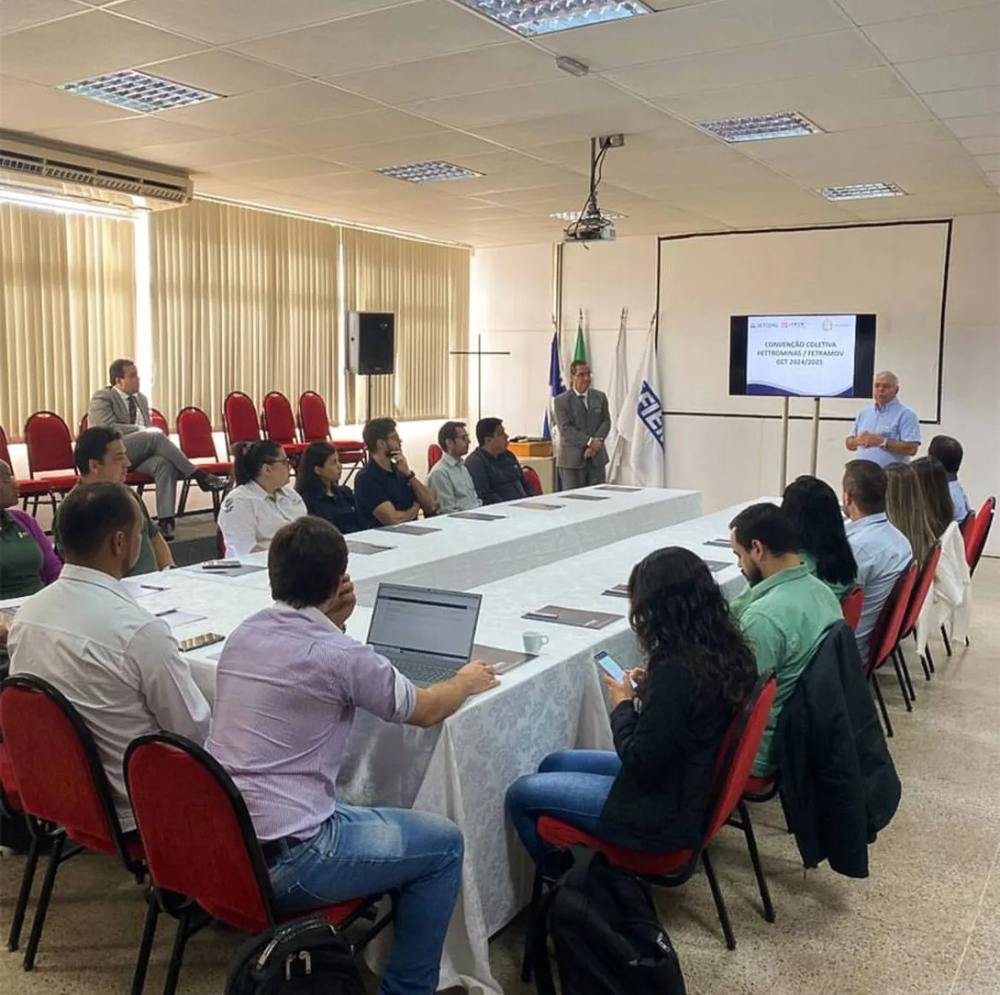
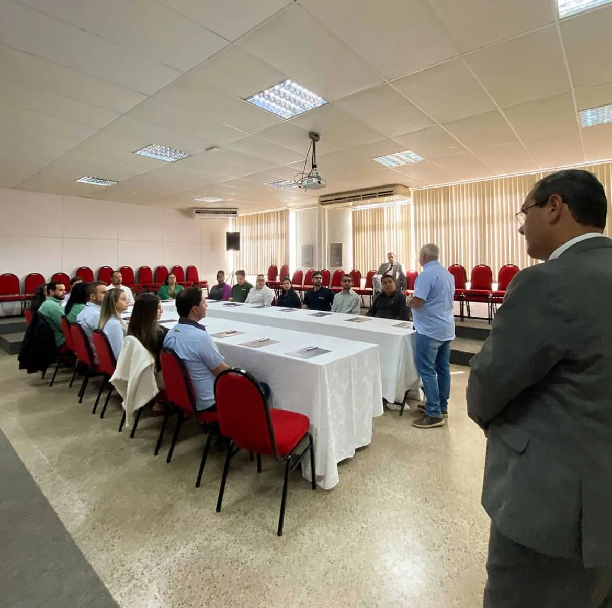
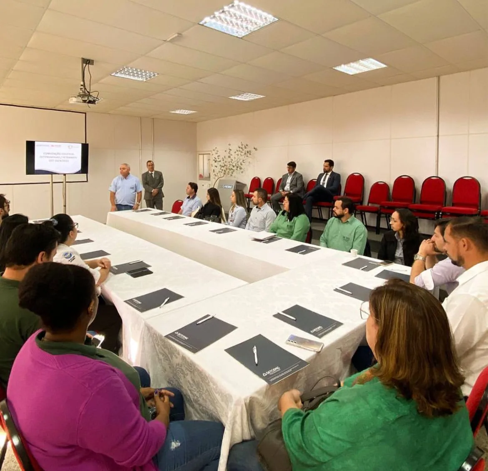

Café com Palestra – Alto Paranaíba/MG
No dia 25 de junho de 2024, foi realizado o primeiro Café com Palestra do SETCEMG na unidade do Alto Paranaíba, em parceria com o nosso escritório Paulo Teodoro Advogados Associados.
O evento, que aconteceu no auditório da Câmara de Dirigentes Lojistas (CDL) em Patos de Minas, reuniu diversas transportadoras da região.

Fotos: SETCEMG
O tema central do encontro foi “Convenção Coletiva 2024-2025: Conheça as Particularidades da Região do Alto Paranaíba” e teve sua abertura conduzida pelo delegado da unidade, Sebastião Amilton de Lima, da empresa Transmilênio. A palestra foi ministrada pelo nosso sócio e assessor jurídico do SETCEMG, Jeferson de Oliveira, que apresentou os detalhes da CCT e esclareceu dúvidas dos participantes.


Fotos: SETCEMG
Para aqueles que não puderam participar do evento ou que ainda possuem dúvidas sobre a nova Convenção Coletiva de Trabalho 2024/2025, nossa equipe está à disposição para ajudar. Entre em contato conosco para obter mais informações ou acesse o site do SETCEMG para mais detalhes.
Em nossas redes sociais, você também pode ficar por dentro de outros treinamentos e conteúdos importantes para o seu negócio. Clique no botão abaixo para conferir.
Paulo Teodoro – Advogados Associados